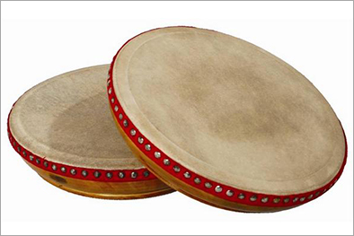
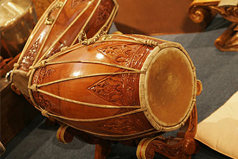
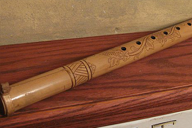
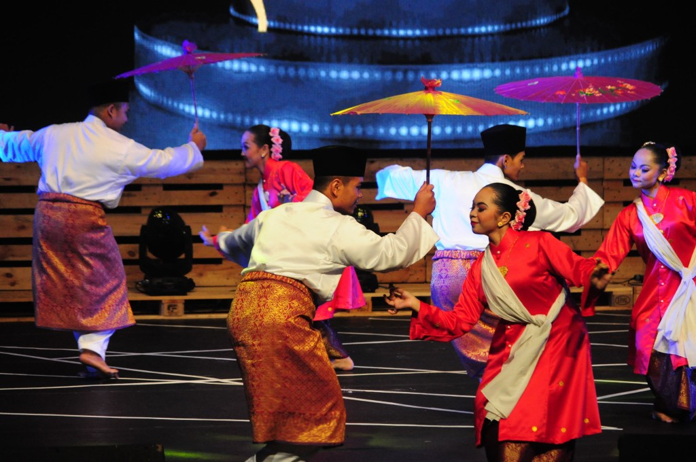
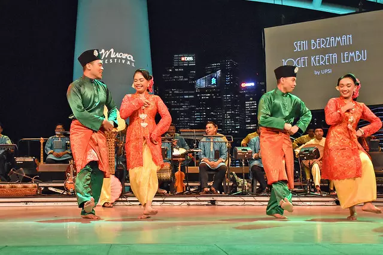
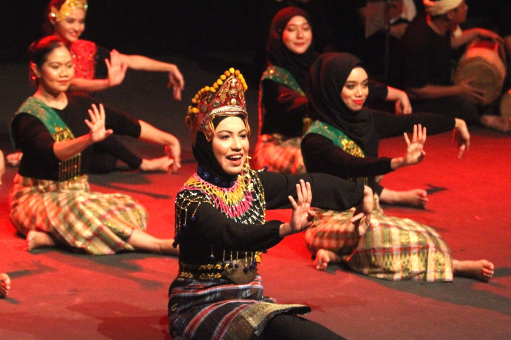

Kompang',
'Kompang is a traditional hand drum widely used in Malay culture, particularly in Malaysia, Brunei, Singapore, and parts of Indonesia. It holds deep cultural significance and is an integral part of various ceremonies, celebrations, and cultural events.',
'','How to Play Kompang.mp4',
'Kompang is a hand-held drum typically made of wood, with a goat or buffalo skin stretched tightly over one of its openings. The drumhead is traditionally fastened to the body using rope or leather straps. Its size and shape can vary, but it usually has a circular or slightly oblong frame. Some kompang drums feature intricate carvings or decorative elements on the wooden frame, reflecting the craftsmanship and cultural heritage of the region. Kompang is also an essential part of traditional Malay performing arts, accompanying dances, theatrical performances, and martial arts demonstrations. Beyond its musical and cultural importance, kompang is seen as a symbol of unity, community spirit, and cultural identity, bringing people together through shared rhythmic expression.
Melodies of Kompang:',
'Kompang.mp3')">
Kompang
Gamelan',
'Gamelan is a traditional ensemble music originated from Indonesia, but it had a significant influence in Malaysia, particularly in the states of Kelantan, Terengganu, and Johor. In Malaysia, gamelan music is often associated with traditional Malay culture and is used in various ceremonies, performances, and cultural events.',
'',
'Nongga.mp4',
'The Malaysian gamelan ensemble typically consists of a variety of instruments, including gongs, drums, xylophones, and string instruments. Each instrument in the ensemble has a specific role and contributes to the overall sound and texture of the music.','')">
Gamelan
Gendang',
'Gendang is a traditional percussion instrument found in Malaysia, particularly in Malay cultural contexts. It is a drum instrument that holds significant cultural and musical importance in Malay society.',
'playing-Gendang.png','',
'High-quality of gendang instruments are crafted from materials such as jackfruit wood, coconut, or cempedak. Buffalo skin is commonly used for the bam to produce low-pitched beats, while soft goat skin is used for the chang to produce high-pitched beats. The skins are stretched over y-shaped leather or rattan strings, which can be adjusted to alter the pitch of the drumheads. Thinner leather results in sharper sounds.
Melodies of Gendang:',
'Gendang.mp3')">
Gendang
Seruling',
'Seruling is a bamboo flute of Malay origin. It has sparked considerable discussion regarding its status as possibly the earliest musical instrument in Malaya as it was commonly used among the indigenous tribes especially the earlier Malays or Proto-Malays who inhibit the jungles.',
'playing-Seruling.png','',
'Seruling is played by blowing air into the mouthpiece at one end while covering and uncovering the finger holes to produce different pitches. Skilled seruling players can produce a wide range of tones and expressiveness through variations in breath control, finger placement, and articulation techniques. Seruling is often associated with traditional folk music, storytelling, and cultural rituals.
Melodies of Seruling:',
'Seruling.mp3')">
Seruling
Zapin',
'Zapin is a style of music and dance brought by traders and missionaries from Yemen during the Islamization of the region in the 14th century and was originally knows as zafin. It is originating from Malay Peninsula and parts of Sumatra, Indonesia.',
'','Zapin.mp4',
'The music and dance was accompanied by the singing praises to God and therefore became both a means of spreading Islam and of entertainment. Zapin was once exclusively performed by males. Now, zapin can be performed by male-female pairs though it is still more commonly performed by all-male groups. Zapin dance is characterized by its graceful movements, rhythmic footwork, and intricate hand gestures. Typically performed in a group setting, Zapin is often accompanied by live music, including traditional Malay instruments such as the gendang (drum) and seruling (flute). The dance is deeply rooted in Malay culture and is commonly performed at weddings, cultural festivals, and other celebratory events.','')">
Zapin
Joget',
'Joget dance is a lively and popular traditional dance form originating from Malaysia and Indonesia. The history of joget can be traced back and influenced by the two well known Portuguese folk dances called Branjo and Farapeirra. It was introduced in Melaka during the 16th century and is referred to as Chakunchak in this state.',
'joget2.png','',
'Joget is performed by its energetic and rhythmic movements, often accompanied by upbeat music. The dance is typically performed in pairs or groups, with dancers moving in sync to the lively tempo of the music. Male dancers wear baju melayu and samping while female dancers wear baju kurung and flower head dress. The movements suggests teasing and playing between partners although as with other traditional dance forms, the partners never touch each other.','')">
Joget
Mak Yong',
'Mak Yong dance is a traditional theatrical art form originating from Kelantan and Patani region of South Thailand. It combines elements of dance, music, storytelling, and ritualistic performance. ak Yong is deeply rooted in Malay cultural and spiritual traditions, often depicting tales from Malay folklore, legends, and ancient myths.',
'makyong2.png','',
'Mak Yong is traditionally performed in village squares, community halls, or during special occasions and ceremonies. The performance typically involves a troupe of dancers, musicians, and actors who come together to create a mesmerizing spectacle for the audience. The dance is characterized by its intricate choreography, elaborate costumes, and stylized movements. Performers often wear colorful costumes and elaborate headdresses, transforming into characters from Malay mythology and folklore.',
'')">
Mak Yong
Dikir Barat',
'Dikir Barat is a traditional Malay musical and poetic form that originated in the northern states of Malaysia, particularly in the state of Kelantan. It is a unique and dynamic performance art that combines elements of singing, chanting, poetry recitation, and synchronized body percussion.',
'dikirbarat2.png','',
'Accompanying the vocal performance is the rhythmic clapping and body percussion, known as kentongan or rebana. The performers use their hands, feet, and body movements to create intricate rhythmic patterns, adding to the overall dynamic and energetic atmosphere of the performance.','')">
Dikir Barat